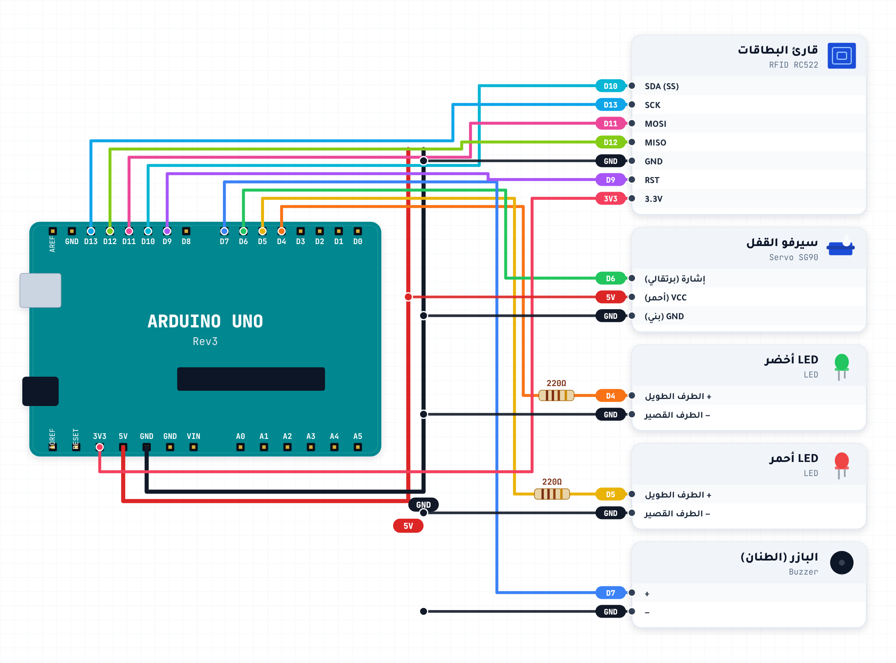

▶فيديو الشرح
بطاقة مسموحة تفتح الباب مع ضوء أخضر، وبطاقة مجهولة تطلق إنذاراً.
1المكونات
ARDUINO UNOboardقارئ البطاقاتRFID RC522سيرفو القفلServo SG90LED أخضرLEDLED أحمرLEDالبازر (الطنان)Buzzerأسلاك توصيلJumper Wiresلوحة تجاربBreadboard
2مخطط التوصيل

اضغط على المخطط لتكبيره · نسخة SVG عالية الدقة
| القطعة | الطرف | يوصل إلى |
|---|---|---|
| قارئ البطاقات | SDA (SS) | D10 |
| قارئ البطاقات | SCK | D13 |
| قارئ البطاقات | MOSI | D11 |
| قارئ البطاقات | MISO | D12 |
| قارئ البطاقات | GND | GND |
| قارئ البطاقات | RST | D9 |
| قارئ البطاقات | 3.3V | 3V3 |
| سيرفو القفل | إشارة (برتقالي) | D6 |
| سيرفو القفل | VCC (أحمر) | 5V |
| سيرفو القفل | GND (بني) | GND |
| LED أخضر | + الطرف الطويل | D4 عبر مقاومة 220Ω |
| LED أخضر | − الطرف القصير | GND |
| LED أحمر | + الطرف الطويل | D5 عبر مقاومة 220Ω |
| LED أحمر | − الطرف القصير | GND |
| البازر (الطنان) | + | D7 |
| البازر (الطنان) | − | GND |
3الكود
المكتبات المطلوبة (من Arduino IDE ← Sketch ← Include Library ← Manage Libraries):
- MFRC522 — GithubCommunity
- Servo (مدمجة مع Arduino IDE)
/* المستوى المتوسط — المشروع 6: قفل الأبواب الذكي وسجل الحضور (RFID RC522) كتاب: 38 مشروع في شهر — لؤي النصري (@robotlouay) المكتبة: MFRC522 (GithubCommunity) التوصيل: RC522: 3.3V → 3.3V (وليس 5V!) GND → GND RST → Pin 9 SDA(SS) → Pin 10 MOSI → Pin 11 MISO → Pin 12 SCK → Pin 13 Servo: إشارة → Pin 6 أحمر → 5V بني → GND LED أخضر ← 220Ω ← Pin 4 LED أحمر ← 220Ω ← Pin 5 Buzzer (+) → Pin 7 الخطوة 1: قرّب بطاقتك وانسخ الـ UID من Serial Monitor. الخطوة 2: ضعه في جدول allowed[] ثم ارفع الكود من جديد. */ #include <SPI.h> #include <MFRC522.h> #include <Servo.h> const int SS_PIN = 10, RST_PIN = 9; const int SERVO_PIN = 6, GREEN_LED = 4, RED_LED = 5, BUZZER_PIN = 7; MFRC522 rfid(SS_PIN, RST_PIN); Servo door; // البطاقات المسموح لها (غيّرها ببطاقاتك) const char* allowed[] = { "A1 B2 C3 D4", "DE AD BE EF" }; const int ALLOWED_COUNT = sizeof(allowed) / sizeof(allowed[0]); String readUid() { String uid = ""; for (byte i = 0; i < rfid.uid.size; i++) { if (rfid.uid.uidByte[i] < 0x10) uid += "0"; uid += String(rfid.uid.uidByte[i], HEX); if (i < rfid.uid.size - 1) uid += " "; } uid.toUpperCase(); return uid; } bool isAllowed(const String& uid) { for (int i = 0; i < ALLOWED_COUNT; i++) if (uid == allowed[i]) return true; return false; } void grantAccess() { digitalWrite(GREEN_LED, HIGH); tone(BUZZER_PIN, 1500, 150); door.write(90); // فتح delay(3000); door.write(0); // إغلاق بعد 3 ثوانٍ digitalWrite(GREEN_LED, LOW); } void denyAccess() { for (int i = 0; i < 5; i++) { digitalWrite(RED_LED, HIGH); tone(BUZZER_PIN, 400); delay(150); digitalWrite(RED_LED, LOW); noTone(BUZZER_PIN); delay(100); } } void setup() { Serial.begin(9600); SPI.begin(); rfid.PCD_Init(); door.attach(SERVO_PIN); door.write(0); pinMode(GREEN_LED, OUTPUT); pinMode(RED_LED, OUTPUT); pinMode(BUZZER_PIN, OUTPUT); Serial.println("Scan a card..."); } void loop() { if (!rfid.PICC_IsNewCardPresent() || !rfid.PICC_ReadCardSerial()) return; String uid = readUid(); Serial.print("Card UID: "); Serial.print(uid); Serial.print(" | time(s): "); Serial.print(millis() / 1000); // سجل حضور بسيط if (isAllowed(uid)) { Serial.println(" -> ACCESS GRANTED"); grantAccess(); } else { Serial.println(" -> ACCESS DENIED"); denyAccess(); } rfid.PICC_HaltA(); rfid.PCD_StopCrypto1(); }
4كيف يعمل؟
- القارئ يقرأ رقم البطاقة UID
- يُقارن بقائمة البطاقات المسموحة
- مسموحة → أخضر + فتح 3 ثوانٍ
- مرفوضة → أحمر + إنذار
⚠ قبل توصيل الكهرباء: راجع كل سلك مع الجدول أعلاه، وتأكد من عدم وجود تماس بين 5V و GND. اختر اللوحة والمنفذ الصحيحين من قائمة Tools في Arduino IDE.